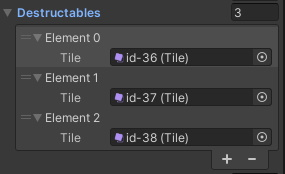

Keep Mining 2 / Getting Started
Keep Mining can be found in the
Assets/Playniax/Keep Mining 2 folder.
The folder contains the levels and UI.
Main in-game textures can be found there also.
The tileset used can be found in the
Assets/Playniax/Framework/Essentials/Textures/Retro/Boulderdash/Tiles folder.
Keep Mining 2 uses the Playniax Frameworks like
Ignition,
Pyro and
MazeAI and are included.
Open one of the levels and have a look at the Engine GameObject using the inspector.
This might look something like this:
The Lives Manager Component determines the number of test lives you have when the SimpleGameUI is not loaded, the Music Player Component should be obvious and the Settings Component determines what tiles for example are marked as doors, what tiles are collectable or what tiles are obstacles.
Settings explained
The
Tilemap property has to point to the Tilemap used in the scene.
The
Background property determines the 'replacement tile'. When the player moves the tile it's 'eating' is replaced with the one set at Background.
The
Doors tab contains the door markers.
The
Key,
Closed and
Open tile are set here.
This way the engine knows what tiles to replace when the player collects the key.
By default there is one combination but you can expand them if needed for example with diffrent color keys and doors.
The
Doors tab looks like this:
The
Door Open tab determines what sound will be played when a door open.
The
Collectables tab determines tiles are collectable, how many points the player is rewarded and what sound will be played:
The engine also needs to know what tiles that can be destroyed by the explosives.
These settings can be found under the
Destructables tab:

The player and enemies have to know what tiles are obstacles meaning they can't walk through.
These settings can be found under
Enemy Obstacles and
Player Obstacles: